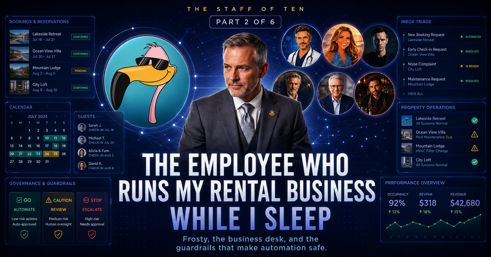

Real guests, real money, real legal exposure — and a three-color constitution that decides what the AI is allowed to touch.

Sometime around 2 a.m., a reservation came in for my rental property. By the time I looked at my phone, it was already sitting in my property-management system — guest mapped, dates confirmed, occupancy set — with a one-line summary of what happened and why it was safe to let through.
I didn't do any of that. Frosty did.
Frosty is the first desk on my staff of ten, and it's the one I'd show someone skeptical about AI, because it isn't managing my calendar or my feelings. It's running a business. A quick word on the name: Frosty was the persona of the rental brand before it was ever a bot. The business already had a mascot — the agent just took the name and the job.
The operation is a short-term rental in a Colorado ski town, booked across the big platforms, all feeding one property-management system as the source of truth. On the board this morning: a handful of upcoming stays, the next guest arriving soon, and my favorite line item — an owner block where the guest is me and the payout is $0. Even the boss books through the system.
Syncing a calendar isn't interesting; plenty of software does that. What's interesting is that Frosty makes decisions — inside rules strict enough that I sleep through the night.
4 a.m. — the business brief. Frosty pulls active bookings, works out who's arriving and leaving over the next seven days, and triages the business inbox — guest messages, platform notifications, vendor mail — into "handled" and "needs Alan." It's waiting for me when I wake up.
7 a.m. — the booking pipeline. A short, staggered sequence of scheduled jobs — plain old cron, courtesy of OpenClaw, the self-hosted framework the whole staff runs on: review anything deferred overnight, catch up bookings that need creating in the system, reconcile the pending queue. Deliberately boring, deliberately sequential.
The 28th — obligations. Once a month Frosty does the unglamorous work that actually sinks rental owners: licenses, taxes, renewals. Right now it's tracking the town's STR license renewal — a recurring filing window — so a lapsed permit never becomes a fine, or worse, a shutdown. Humans forget this stuff precisely because it only happens once a year.
Here's the question everyone asks: aren't you afraid it'll say something stupid to a real guest? I would be, if it could act on whatever it wanted. It can't. Every guest interaction gets sorted into one of three zones before Frosty is allowed to touch it. I call it the Guest Interaction Constitution, and writing it was the best AI-safety education I've ever had — not a course, just a few Tuesday nights arguing with a bot about what counts as a refund question.
Low-risk, known-answer questions. One correct response exists; no judgment involved. Frosty answers directly from approved templates.
Wi-Fi passworddoor codecheckout timeparkingwhat's nearbySituational stuff. Frosty writes the reply and holds it for my approval. Nothing goes to the guest until I say so.
date changesearly check-inlate checkoutrule exceptionsMoney, legal, safety, reputation. Frosty does not reply on my behalf, period. It summarizes, lays out the facts, and escalates. And the catch-all: anything it's not sure about is red by default.
refundschargebacksdamageinjuriesangry guestsunknown people at the dooruncertainty itselfBookings work the same way. When one needs my sign-off, Frosty sends me a compact card:
That default is the entire ballgame. A naive system defaults to yes (act, keep things moving) or no (block everything, become useless). Frosty defaults to not yet. Silence from me is never read as consent. Worst case when I'm asleep or on a chairlift with no signal isn't a bad booking pushed through — it's a booking that waits politely for me to respond, on my schedule. It fails safe by failing slow, on purpose.
"It runs itself" is a lie every automation vendor tells, so let me be straight about the limits. Frosty doesn't set pricing strategy. It doesn't decide whether to fire a cleaner, take a sketchy last-minute booking, or eat a refund to dodge a bad review — those are red-zone by design and they come to me.
What it removes is the tax of remembering: the two hundred small things that make even one rental a background hum of anxiety. Did the booking sync? Is the license current? Did anyone message overnight? Is tomorrow's guest all set? Frosty holds all of it and interrupts me only when interrupting me is the correct move.
That's the honest ROI. Not "AI replaced me." More like: I got a
diligent, slightly anxious operations manager who works every
hour of every day, never forgets a renewal, reads every guest
message the minute it lands — and follows a written rule about
exactly when to wake me. A skeptic doesn't need to believe the
agent is smart. They need to believe the guardrails are real.
The intelligence is optional.
Next up: the one agent I allow to make simulated trading
decisions on its own — and the story of how its predecessor got
caught losing on purpose.
In your business, where should silence never mean consent?